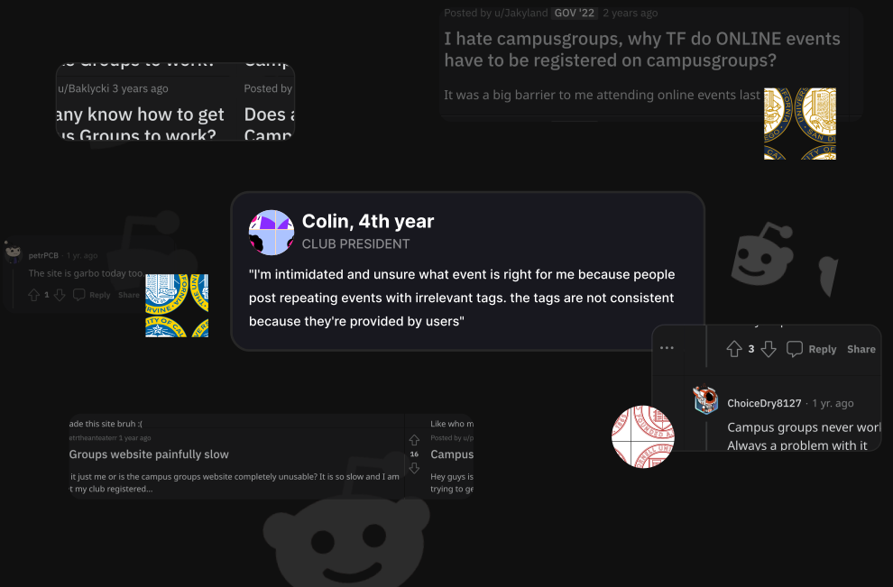
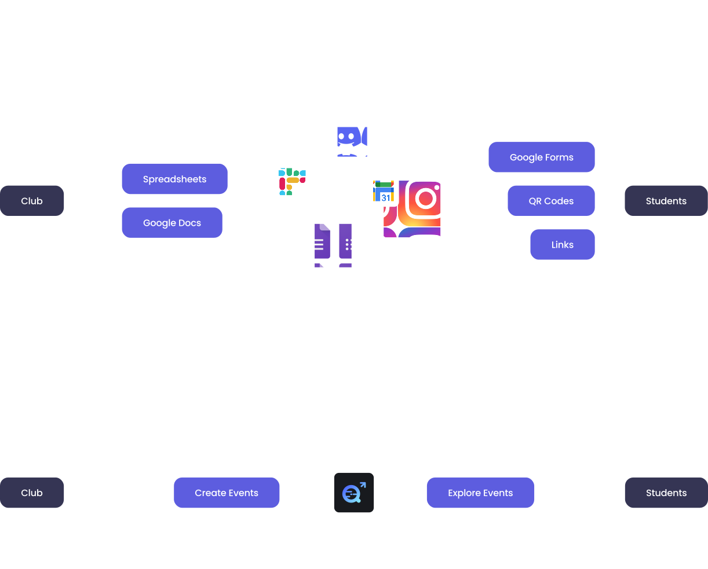
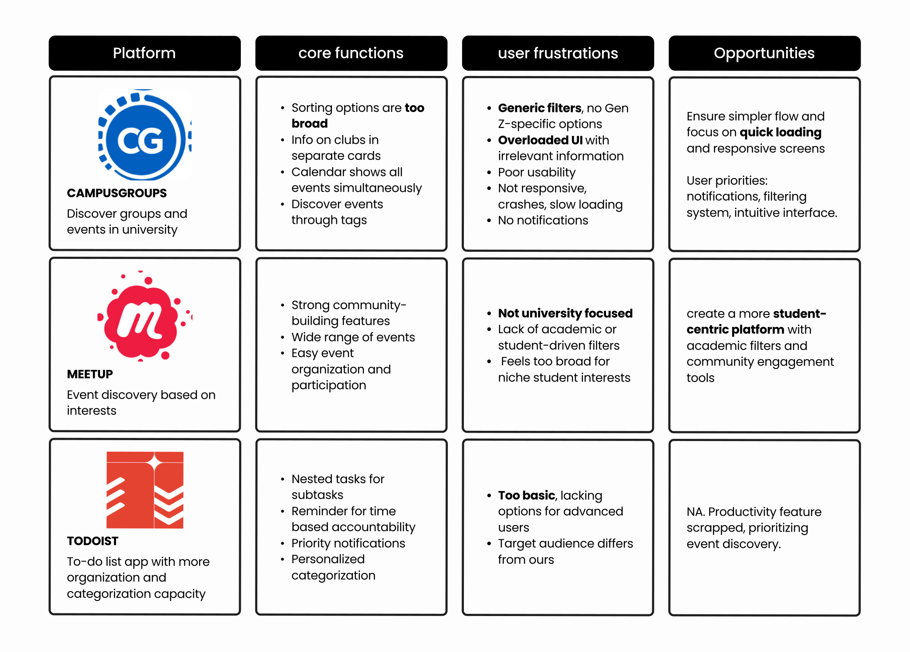
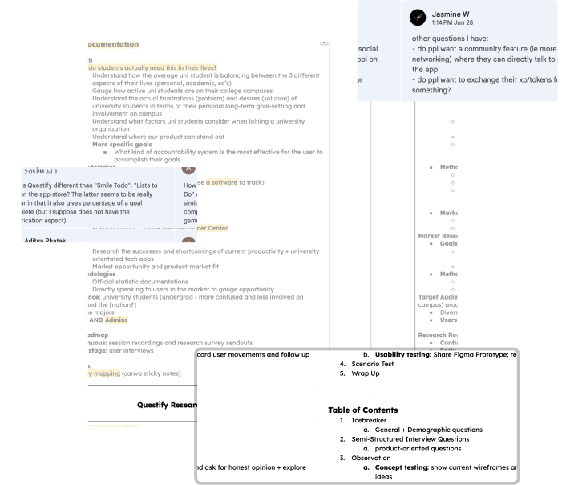
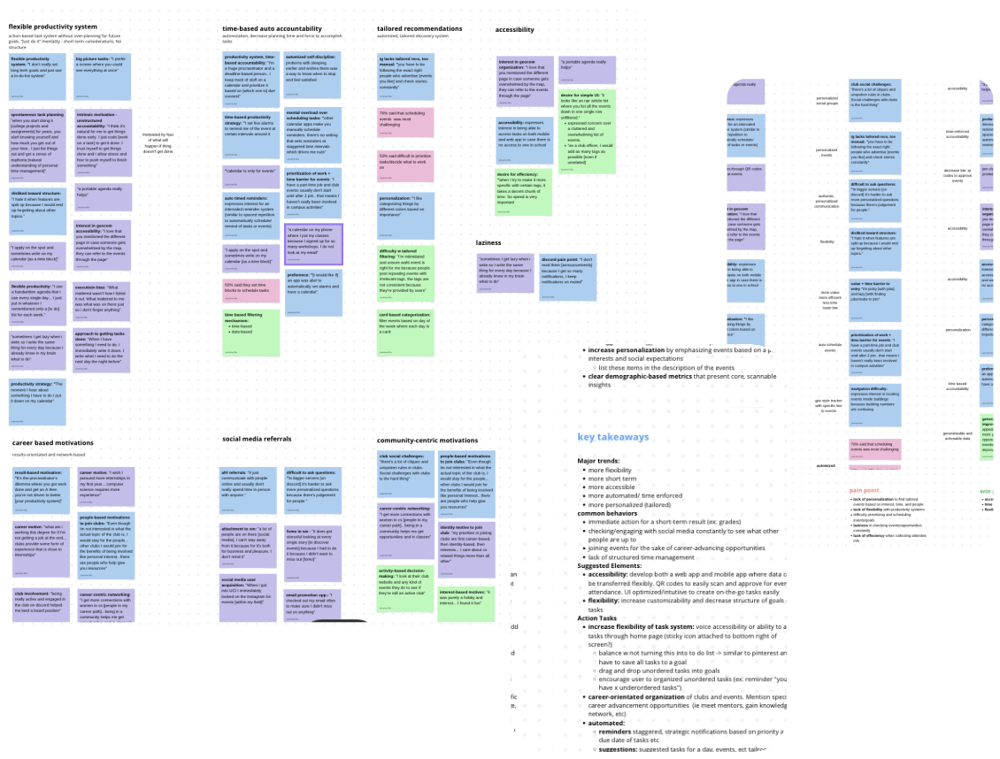
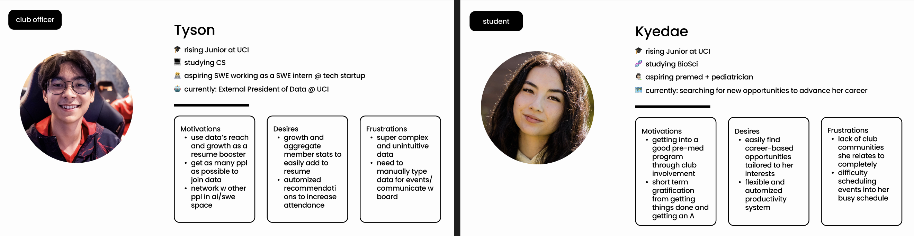
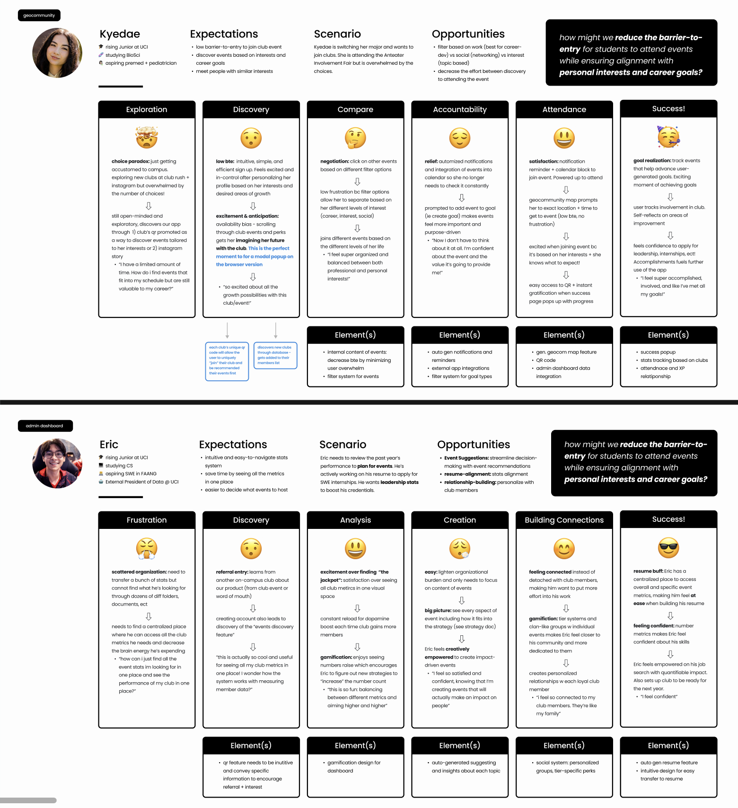
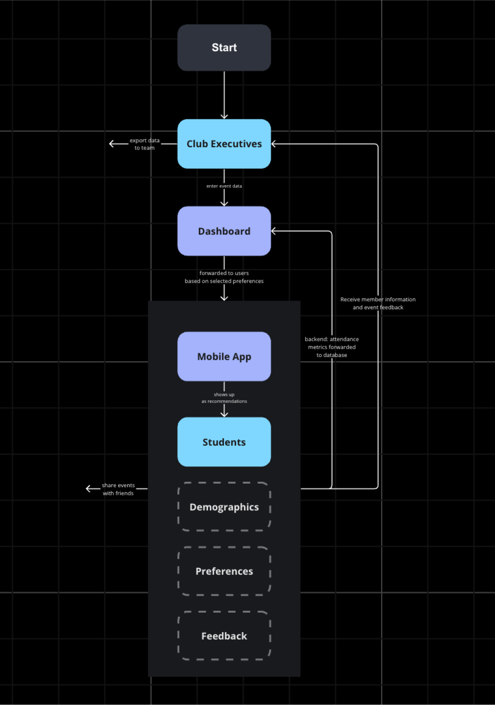

Working with 7 UCI Students to solve our personal frustrations
Entering my Freshman Year of University, I knew I wanted to get involved, but the trade-offs of joining one club over another were overwhelming. Getting involved in clubs is a pillar of university experience, but barriers-to-entry like the complexity of club discovery and academic pressure discourage students from finding their tribe.

How might we make the club discovery and management process less stressful without sacrificing exploration for busy college students?
Problem Discovery
Students are overwhelmed and frustrated with the complexity
These are common problems that college students around the US are experiencing. Clubs are a crucial part of university life for most students, both as a means to meet people and to advance one’s career. However, most clubs at UCI use incompatible systems: from google forms to physical sign-in sheets. Students are having trouble managing all these logistics across multiple clubs.
Multiple streams of information
Imagine you're a HS Senior who just got into your dream college.
You’re excited to get involved but with
over 1,000 clubs and move-in prep, you just don’t
have time. You end up joining clubs that you’re not interested in
and fall off in a month. What now?
After digging deeper into the student life of other campuses, we
found that public universities have a LOT of clubs. Students
expressed hesitation
to join clubs due to inflexible schedules and misalignment with
their career ambitions.

The User Pipeline is messy
The current user flow between clubs and students isn’t consistent
across clubs and leverages a lot of external softwares that
increases the barriers-to-entry to participating in
these clubs.
To address the issue of lacking a centralized access point for
club activities, I mapped out the direct flow between
students and clubs. I also included the main input items (feedback
and demographic data) that were not well centralized in clubs.

Current Solutions aren't working
One of the main, university-funded platforms students are familiar with is CampusGroups: an information-heavy, complex system for clubs to upload their events. Analyzing competitors revealed that academic institutions just want a "good-enough" platform, even if that means sacrificing student experience.

User Research
We talked to 30+ UCI students... and they’re frustrated.
Through our personal connections, we received feedback from students through 24 user surveys, 4 user interviews, and several coffee chats through discord servers, instagram, and linkedin (to target a vast variety of students). We also personally talked to executive members of clubs to understand their pain points.
User Research Protocol
To dig deeper into root cause and patterns of frustrations across UCI students, I worked with my team to craft a research protocol shipped to students to UCI discord channels and personal connections to club executives.
Interviewing 4 UCI Students
After scheduling interviews with 4 UCI students, here are the
common patterns of behavior we found.
frustrated by: complexity of current systems
forcing them to do more work than necessary leads to higher user
drop-off
motivated by: building social connections and
career-boosting opportunities
Connecting the dots between clubs and students
Using raw user feedback, I documented findings on sticky notes and grouped them to identify common behaviors, motivations, and frustrations among students and club executives.
Conceptual Clustering
Documenting Insights

Characterizing our Core User Groups
We identified two primary user groups. Club Officers are clear about their career direction and want to user clubs to build their resume. Students are less clear about their goals and want to use clubs to explore their interests and build skills.
KEY INSIGHTS
🕒 Time-based Accountability Motivates Task Completion
University students have a more freedom over their time, but this comes with more responsibility and less accountability. They prefer accountability systems that are time-based.
🎯 Barriers to Club Discovery Prevent Student Engagement
Many students expressed difficulty in discovering clubs that matched their interests due to lack of centralized platforms, which led to missed opportunities and lower participation rates.
📊 Lack of Data Transparency for Club Executives
Club leaders found it challenging to track member growth and engagement with no effective data analysis systems, making it difficult to improve retention and measure the impact of their initiatives.
Translating into Solutions
Mapping Entry Point Flows
Based on the research, students care primarily about interest and career-driven outcomes when interacting with clubs. Club executives, on the other hand, are more concerned with member growth and resume building experiences.
Prioritizing Features
For officers, we prioritized tangible stats and demographic info
to increase situational awareness over their club,
not completely offloading their work.
For students, we prioritized
accountability and interest-based features to
increase engagement and aid in their career consolidation
process.
Prioritizing Features

Branding and Marketing
Designing Marketing Collateral
Designed graphics and flyers to ship to student clubs and lectures for promotion.

Designing Pitch Decks to Club Officers
Designed a pitch deck which our team presented to 5 different university clubs and offices to gather feedback and assess interest.